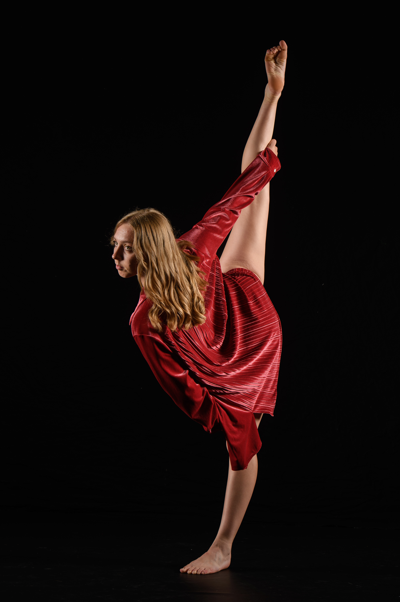
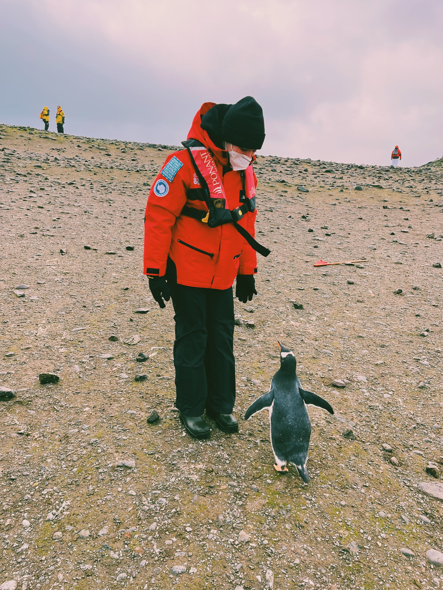
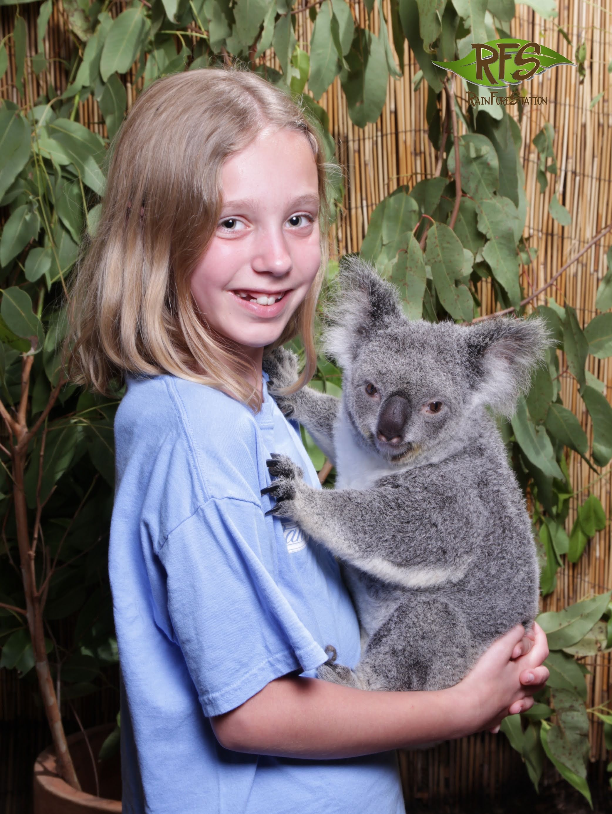

Interests
My interests include learning more about UI/UX research and design and how I can make websites most accessible to as many users as possible.
Additionally, I am also very passionate about dancing, as I have been doing it for 18 years, and I'm also a Captain on the Club Dance Team at CU Boulder. When I'm not dancing I also love to travel, which I like to credit to my avid traveling parents. My favorite place I've visited has been London and Sydney, Australia, however a fan favorite and a story I always love to tell is going to Antarctica.


